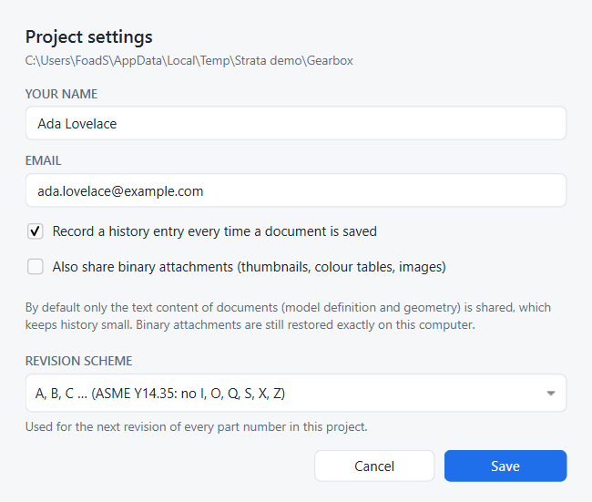

Settings and preferences
Strata has two kinds of settings: project settings, which belong to one project, and preferences, which belong to your FreeCAD installation.
Project settings
Open the ⋯ menu in the panel and choose Project settings….

- Your name, Email
-
Shown next to your changes, versions and releases. Stored in the project’s history configuration, so each project can carry a different identity, for example a work email.
- Record a history entry every time a document is saved
-
On by default. Turn it off to record only when you create versions, restore, merge or sync. Each of those first records whatever you saved since the last entry, so nothing is lost.
- Also share binary attachments
-
Off by default. FreeCAD documents contain a few binary parts: thumbnails, colour tables and, if you enabled it in FreeCAD, binary BREP geometry. By default only the text content is shared through history. That is the model definition and the BREP geometry, which FreeCAD writes as text by default. Binary parts are kept in a local store, so restores on your computer are exact, and your history stays small. Turn this on if colleagues should also get the exact thumbnails and colours.
- Revision scheme
-
How the next revision of a part number is labelled: A, B, C … (default; ASME Y14.35 letters, skipping I, O, Q, S, X and Z, then AA after Y) or 1, 2, 3 …. Existing revisions keep their labels. See Release a design.
These settings are stored in <project>/.strata/settings.json, apart from your name and email, which live in .strata/repo.git/config.
FreeCAD preferences
Strata keeps a few preferences in FreeCAD’s parameter store under BaseApp/Preferences/Mod/Strata.
You can see them in .
| Parameter | Default | Meaning |
|---|---|---|
|
true |
Whether the panel is shown when FreeCAD starts. Changes only when you close or reopen the panel (with its ×, Ctrl+Shift+H, the toolbar button, the status-bar indicator or the Strata workbench). Background tabs and closing FreeCAD do not change it. |
|
|
Where the panel docks when FreeCAD starts: |
|
false |
For add-ons that host Strata in their own interface. When true, Strata adds no toolbar of its own. See Embedding. |
|
empty |
Keys chosen by a hosting add-on, as JSON ( |
If you remove an add-on that hosted Strata and want Strata’s own toolbar, keys and panel position back, run this once in FreeCAD’s Python console: import strata.boot as sb; sb.configure(host_toolbar=False, panel_area="right", shortcuts={}), then restart FreeCAD.
|